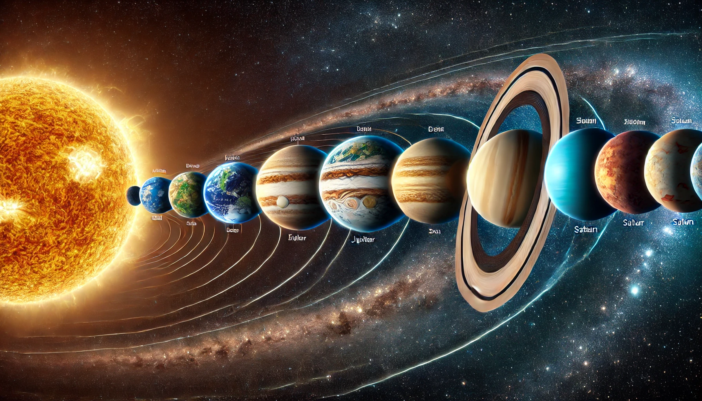

Alinhamento planetário: como e quando observar o
fenômeno raro desta
semana

Confira a data do Eclipse lunar total que será visto de
todo o
Brasil

Confira a data do Eclipse Solar parcial que poderá
ser observadodo Brasil
Confira a data do Eclipse Solar parcial que poderá ser
observadodo Brasil